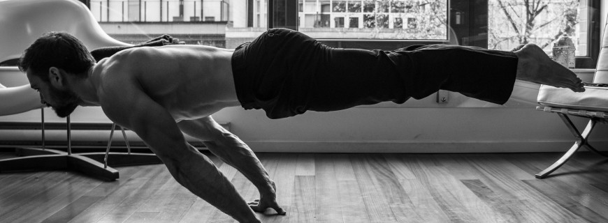

Nuestro primer dia de calistenia
Todo gran viaje tiene su punto de partida y en calistenia no iba a ser menos.
Si miras en google o You Tube los resultados que arroja la simple palabra calistenia visualizarás todo tipo de movimientos y ejercicios imposibles para el ser humano promedio.
Para colmo, los individuos que realizan estas escalofriantes virguerías presentan unos cuerpos envidiablemente esculturales. Sin embargo, todos ellos empezaron como tú y cómo yo por lo más básico. Recuerda que nadie nace sabiendo. Así pues, en este artículo te muestro los puntos básicos con los que comenzarás tu andadura calisténica. En concreto te presentaré los ejercicios que todo principiante puede y tiene que practicar desde el primer día; da igual que tengas 15 o 60 años, sedentario o practicante de otros deportes, mujer o varón… Creo que queda claro así que vayamos al lío.